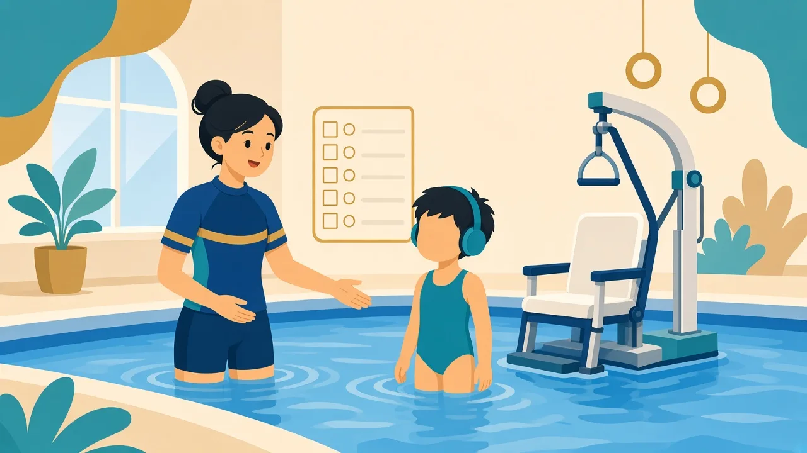
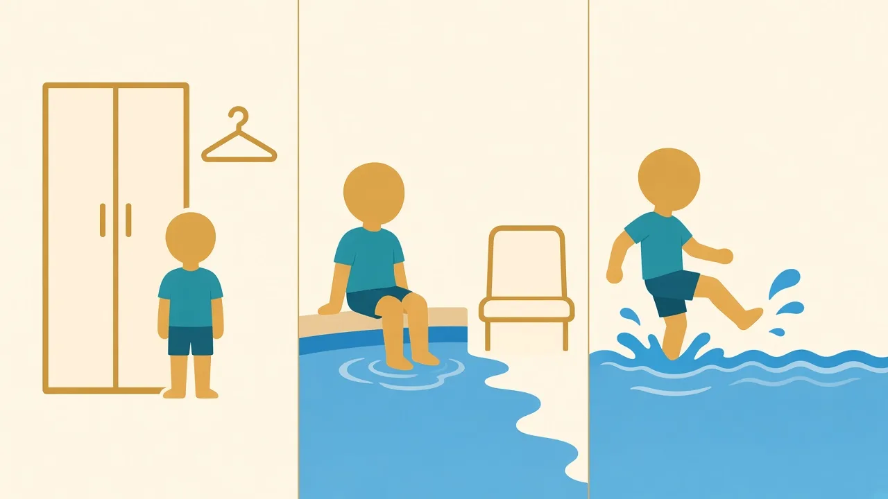

語言不只是說話：手勢、圖卡、表情與孩子慣用的 AAC，都可以成為課堂語言

有些孩子怕說話、句子短；有些滔滔不絕但組織弱；有些口語不錯，卻難輪流、難對題。這都可能是語言或社交溝通需要，不是「不聽話」。游泳課會先找出合適的語言平台：孩子現有能力、家中慣用語言（單語／雙語），以及他已經在用的圖卡或 App。
溫馨提示：本頁為家長教育整理，供認識特殊需要與游泳教學方向參考，並非醫療診斷或治療建議。孩子個別安排請 WhatsApp 與教練商討。


圖片交換溝通系統教導孩子主動遞出圖片來表達需要，而不是只等待別人猜。階段由單張圖卡易物，逐步到走去找溝通夥伴、分辨圖卡、組合「我想要＋物品」、再回應問題與評論。好處是建立「溝通有用」的動機，減少因表達不出而哭鬧。
泳池實用例子：帶「休息」「再試一次」「耳塞」「上岸」等圖卡，讓孩子在水中仍有方法表達，而不是只能用掙扎或喊叫。
當紙本圖卡需要更多詞彙或發聲支援，家庭可考慮 AAC App。香港本地有志願機構研發、針對粵語及在地生活情境的免費選擇（例如匡智會「匡智溝通易」），亦有國際 AAC 工具。我們不指定、不代售任何 App，但歡迎你把已設定好的溝通版面帶來課堂，讓學校、家中與泳池用同一套符號。
可以。我們會用示範、圖卡與固定流程。請把孩子慣用的溝通方法告訴教練，第一次試堂就可以帶圖卡來。
不必。紙本圖卡、手勢、物件提示都可以。選擇應配合孩子現有能力與言語治療師建議。
水中嘈雜、焦慮時，口語理解會下降。視覺提示能減輕負擔，對「高口語」孩子同樣有用。